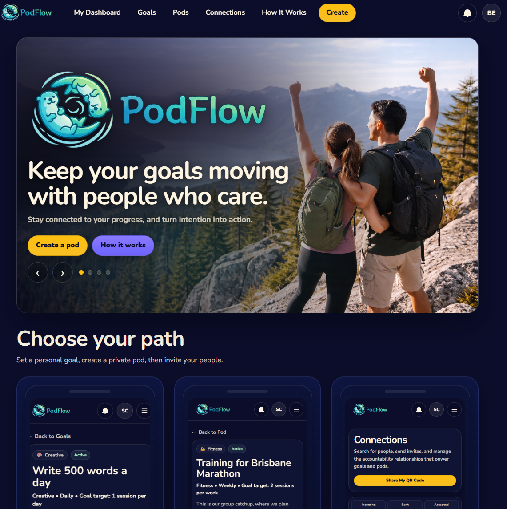

PodFlow
Full Stack Accountability Platform
A private accountability platform built with React and Django REST Framework, designed to help people keep goals moving together.
- Private pods and trusted accountability
- Shared goals, check-ins, and verification workflows
- Role-based permissions and notifications system